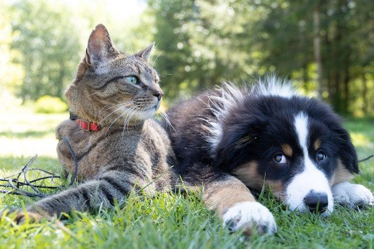
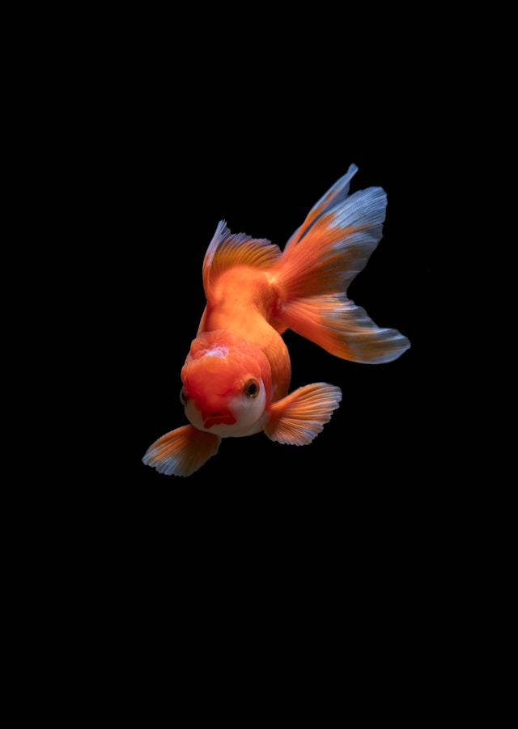

Auf dieser Website findest du Informationen über Haustiere du lernst viel neues.
Welches Tier bellt?
Hund
Haustiere sind überall auf der Welt sehr beliebt, etwa über der hälfte der aktuellen Weltbevölkerung halten, beziehungsweiße besitzen ein Haustier,dabei hängt es stark davon ab wo man wohnt, denn nicht überall auf der Welt werden Haustiere gehalten.
HUND: wenn man einen Hund besitzt muss man regelmäßig mit ihm raus gehen und sich um ihn kümmern.Hunde müssen regelmäßig zum Tierarzt und benötigen Streicheleinheiten.
h1>HUND: wenn man einen Hund besitzt muss man regelmäßig mit ihm raus gehen und sich um ihn kümmern.Hunde müssen regelmäßig zum Tierarzt und benötigen Streichel Einheiten.FISCHE: wenn man ein Fisch als Haustier hält ist es wichtig ihn regelmäßig zu füttern und das Aquarium zu reinigen.

Die meisten Tiere sind sehr Zeitaufwändig,da du mit ihenen raus gehen musst oder etwa ihr Gehehege reinigen musst, falls du also nicht genug Zeit hast jedoch trotzdem ein Haustier haben möchtest, solltest du dir ein weniger zeit aufwändiges Haustier zulegen. Manche Tiere benötigen viel Zuneigung und Zeit da du mit ihnen raus gehen musst. Wenn du eiene Hund hast musst du beispielswei?e mindestens 2 mal am Tag raus gehen oder wenn du eiene Katze hast sie benötigt zwar etwas weniger Zeit jedoch musst du ihr katzenklo säubern und ihr Fütter einkaufen gehen. Wenn du also ein Haustier mit wenig aufwand suchst informiere dich schon im vorraus